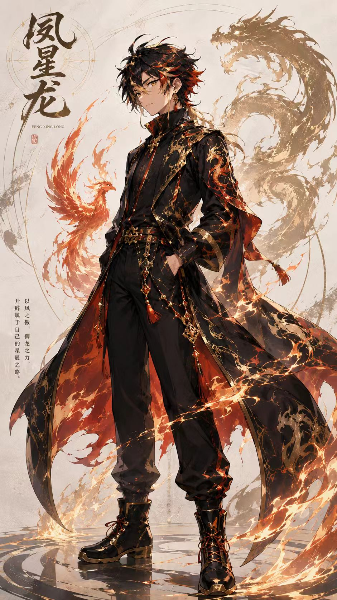

FEATURED PROJECT01 / 01
JEWELCHAIN
黄金设计 AI 渠道探索
通过设计黄金相关的 AI 自动化流程，探索降低人工设计时间与成本压力的可能性。
AI · WEB3 · INTERNET
以 AI 为主航道，在产品、全球 BD 与 Web3 之间持续试验，把真实问题推进成可验证的行动。
01
我相信，好的机会往往不只来自宏大的叙事，也藏在具体、重复且值得被优化的问题里。
你好，我是凤星龙，一名来自广东、在深圳生活多年的大学生。目前，我正在探索互联网、AI 与科技产业的结合方式。
没有标准路径，也不打算用空泛的话掩盖经验不足；我更习惯先研究问题，再借助 AI、行动与互联网寻找答案。

02
JEWELCHAIN
通过设计黄金相关的 AI 自动化流程，探索降低人工设计时间与成本压力的可能性。
03
2026.07
参与线下交流，在真实对话中理解创业者、项目与市场之间的关系。
2026.07
围绕创业、AI 与 Web3 的机会进行交流，观察行业叙事与实际落地之间的距离。
NOW
持续记录、构建和复盘，希望把好奇心变成真正有价值的产品与连接。
04
来自实践、观察和不断更新的判断。
OPEN TO CONNECT
欢迎 AI 产品共创、顾问交流与投资交流。不必把我当作“大佬”——更希望以朋友和同行的方式，坦诚交换想法。